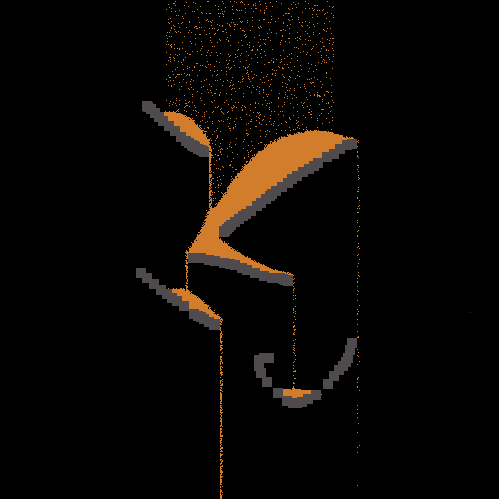

砂シミュレーション
実行例
 実行結果を見る
ソースコード
解説/アルゴリズム
// 画面上部でx軸中央1/3の範囲から砂を書き込む
const fromX = Math.floor(canvas.width / 3);
const toX = Math.floor((canvas.width / 3) * 2);
for (let x = fromX; x <= toX; x++) {
if (p.random() < 0.05) {
setPixel(x, 0, colors.sand);
}
}
毎フレーム画面最上部に一定確率で砂を表す色を書き込みます。
for (let x = 0; x < canvas.width; x++) {
for (let y = canvas.height - 1; 0 <= y; y--) {
fall(x, y);
}
}
全てのピクセルを下から上に走査して、砂を落とす関数を呼び出します。
function fall(x: number, y: number): void {
// (x, y)のピクセルを取り出す
const cur = getPixel(x, y);
// 砂でなければreturn
if (!colorCompare(cur, colors.sand)) {
return;
}
// 一番下のピクセルが砂なら表示を消す
if (canvas.height - 1 <= y) {
setPixel(x, y, colors.none);
}
// 下に何も無ければ砂を下に落とす
else if (colorCompare(getPixel(x, y + 1), colors.none)) {
setPixel(x, y + 1, cur);
setPixel(x, y, colors.none);
}
// 下が空白でなければ横に移動できるか試してみる
else {
const tx = x + p.floor(p.random(-3, 4));
if (colorCompare(getPixel(tx, y), colors.none)) {
setPixel(x, y, colors.none);
setPixel(tx, y, colors.sand);
}
}
}
具体的な砂の落ちるアルゴリズムは下記の通りです。
- 画面一番下のピクセルが砂なら表示を消す
- 対象の砂の下に何も無ければそのまま砂を下に落とす
- 下に何かあれば、左右数ピクセル圏内にある位置をランダムに取得し、そこに移動できるかを試す